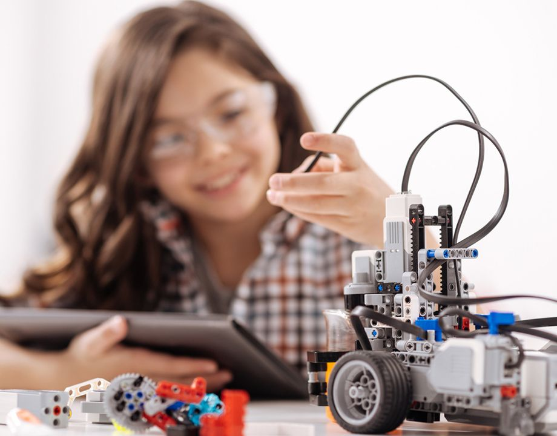

El inglés que se aprende haciendo
En RoboEnglish el inglés no se aprende repitiendo palabras — se aprende construyendo, explicando y presentando robots.
Los niños reciben instrucciones en inglés, nombran las partes de su robot en inglés y presentan su proyecto en inglés. El idioma se convierte en herramienta, no en materia.
Al final del programa, tu hijo no solo sabe más inglés — sabe usarlo con confianza en contextos reales.
Lo que tu hijo desarrolla en este programa
Cada habilidad está pensada para el largo plazo — no solo para pasar una clase.
Vocabulario técnico STEM
Aprenden el inglés de la ciencia y la tecnología — el más útil para su futuro.
Pronunciación y fluidez
Hablar en inglés sobre algo que construyeron ellos hace que quieran hablar.
Instrucciones y comprensión
Seguir instrucciones en inglés mejora la comprensión auditiva rápidamente.
Presentaciones orales
Cada proyecto se presenta en inglés ante el grupo — confianza real.
Robótica de nivel
El componente técnico no es menor — aprenden robótica RISE en paralelo.
Conciencia global
Entienden que la tecnología es un lenguaje universal y el inglés abre esas puertas.
Las mismas herramientas que usan los profesionales
No usamos versiones simplificadas. Desde el inicio trabajan con tecnología real.
Doble aprendizaje: idioma y robótica
RoboEnglish no sacrifica el nivel técnico por el idioma. Los estudiantes completan el equivalente al nivel RISE mientras desarrollan fluidez en inglés.
Lo que los padres más valoran
Estas no son promesas — son las razones reales por las que las familias nos eligen.
Inglés con propósito
No es vocabulario de lista — es el inglés que van a necesitar en la universidad y el trabajo.
Sin sacrificar la robótica
El programa tiene la misma exigencia técnica que el resto de los niveles RoboWorks.
Confianza al hablar
Hablar sobre algo que construiste tú quita el miedo al idioma.
Progreso medible
Pueden seguir su avance en vocabulario y fluidez a través del portafolio.
¿Tu hijo quiere aprender inglés de verdad?
No es inglés de pizarrón — es inglés con robots. Escríbenos y te contamos cómo funciona una clase típica.